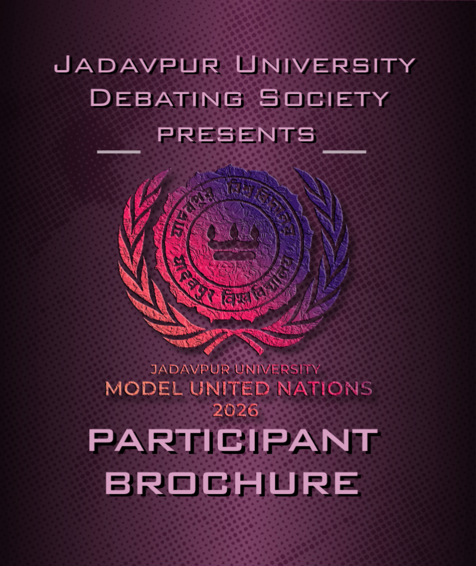
JUMUN Participation Brochure
Get all the essential information about participating in JUMUN 2026 as a delegate.
SEE BROCHURE ↗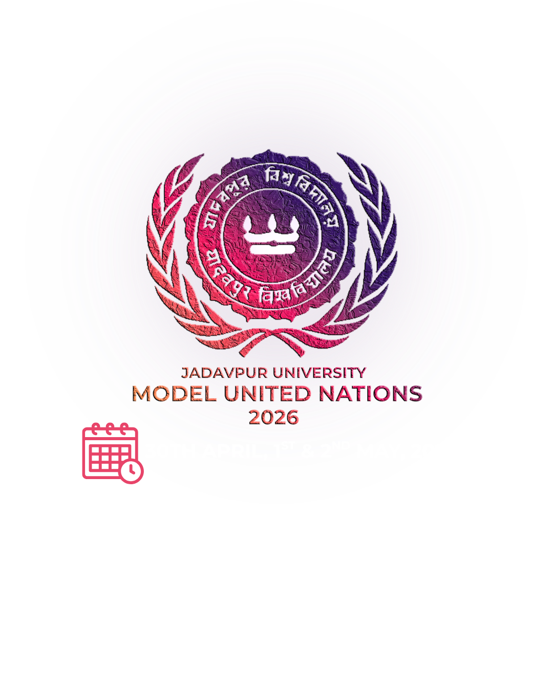
Jadavpur University's global renown comes for what it collectively wishes to achieve as an academic institution and a space for critical thinking. The JU Model United Nations is the manifestation of that desire. It is a platform by the University for students across the world to construct a vision for a better tomorrow.
Since its inception in 2015, Jadavpur University Model United Nations (JUMUN) has evolved into a prominent platform for diplomatic discourse and international awareness. Inaugurated by Mr. Yuri Kolobanov, Consulate General of the Russian Federation to India, the inaugural edition marked the beginning of a legacy renowned in the East India circuit. Subsequent editions, such as the impactful 2017 gathering of 5000 participants, delved into crucial issues like Sustainable Development and healthcare policies. JUMUN's commitment extended in 2018 with initiatives addressing social concerns, advocating education for underprivileged children, and promoting women's healthcare. The initiative continued to flourish, introducing the JUMUN Junior's Initiative in 2019 and successfully transitioning to an online format in 2021 amidst global health dynamics. With diverse forums and a global presence, JUMUN consistently fosters informed discussions on matters ranging from geopolitical crises to environmental agreements.
With a legacy this strong, we as a team only aim to expand our ambit further by extending the conversation to people in this country and abroad. We understand our role and responsibility in addressing the real issues that lie outside committee rooms and we only aim to extend this in our 12th edition by aspiring to diversify our dialogue and endeavour.
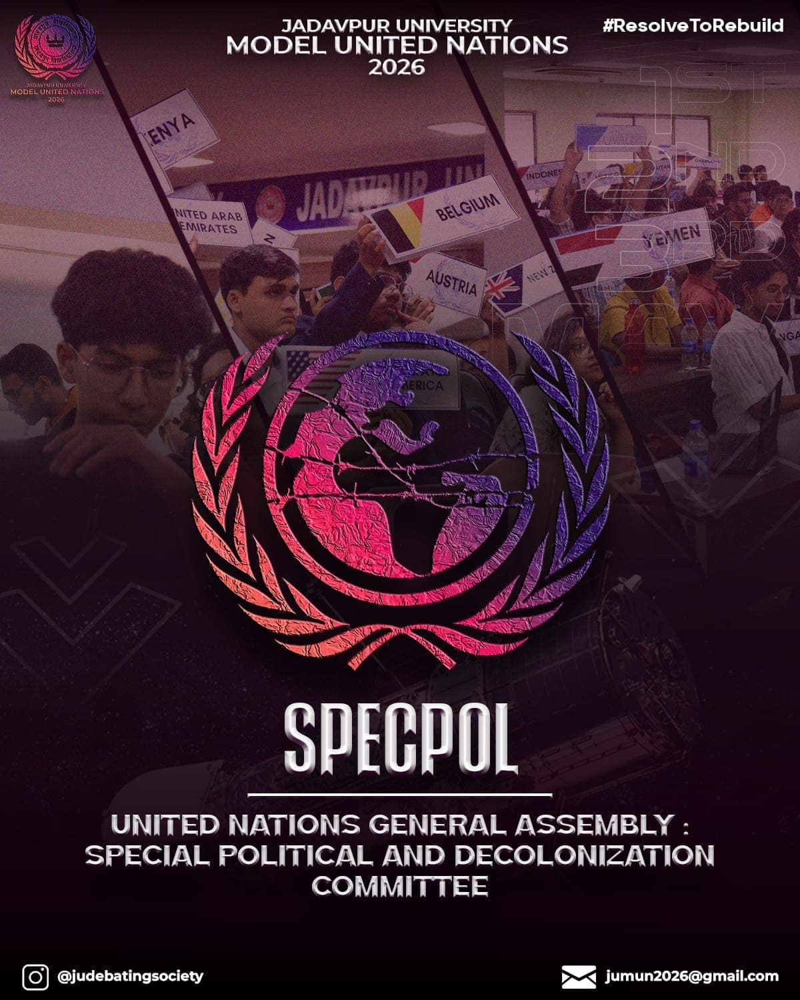
KNOW MORE ↗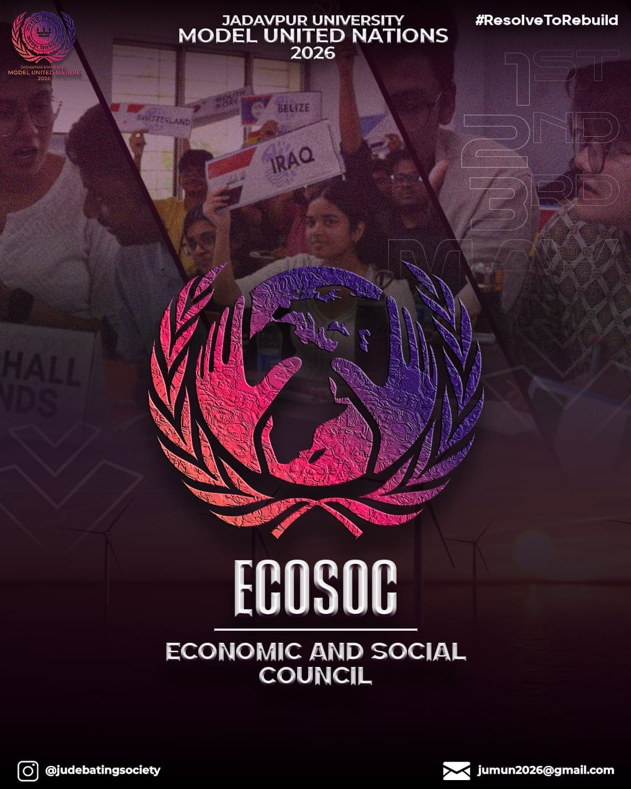
KNOW MORE ↗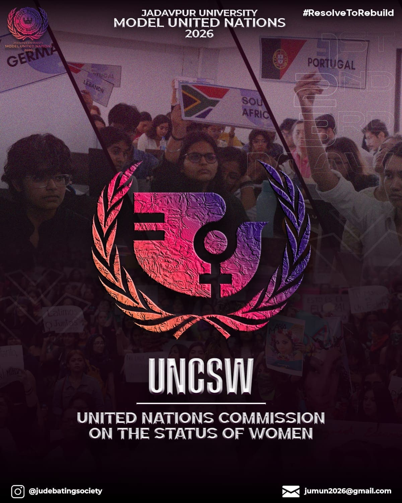
KNOW MORE ↗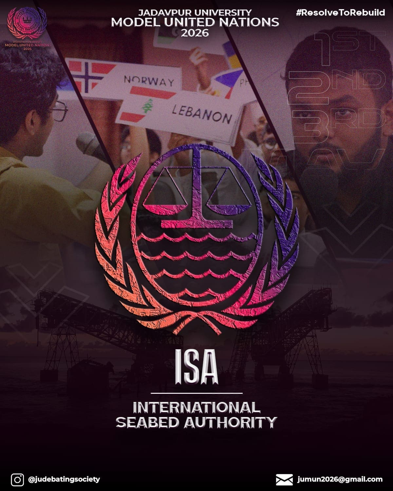
KNOW MORE ↗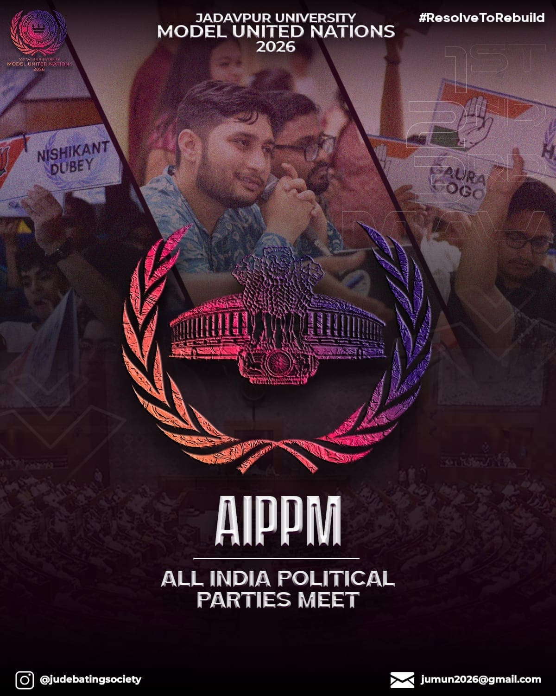
KNOW MORE ↗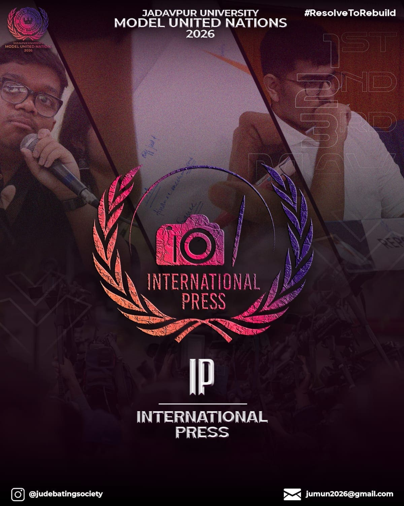
KNOW MORE ↗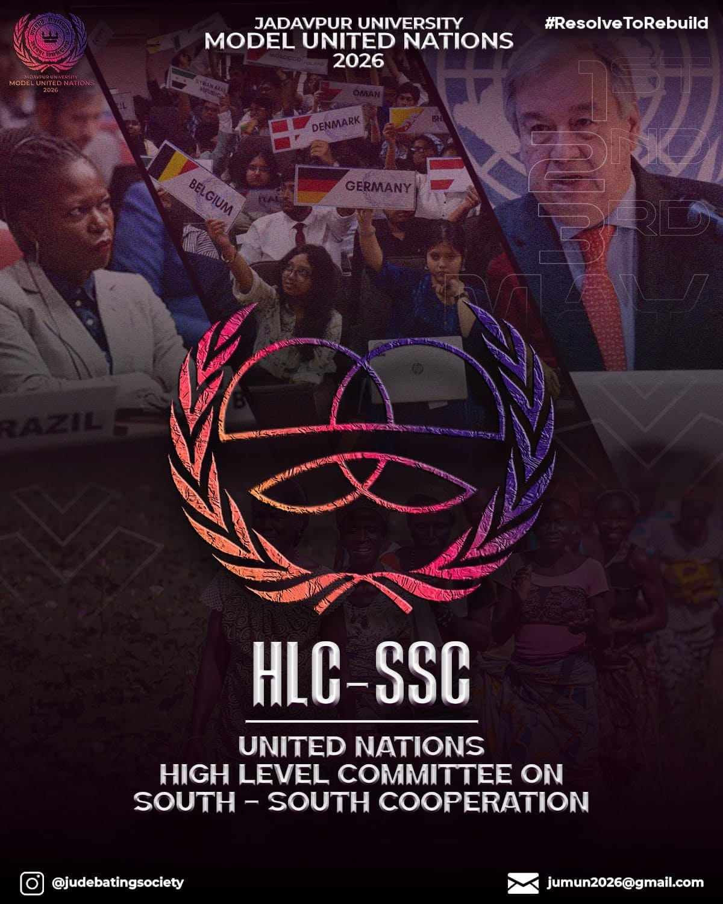
KNOW MORE ↗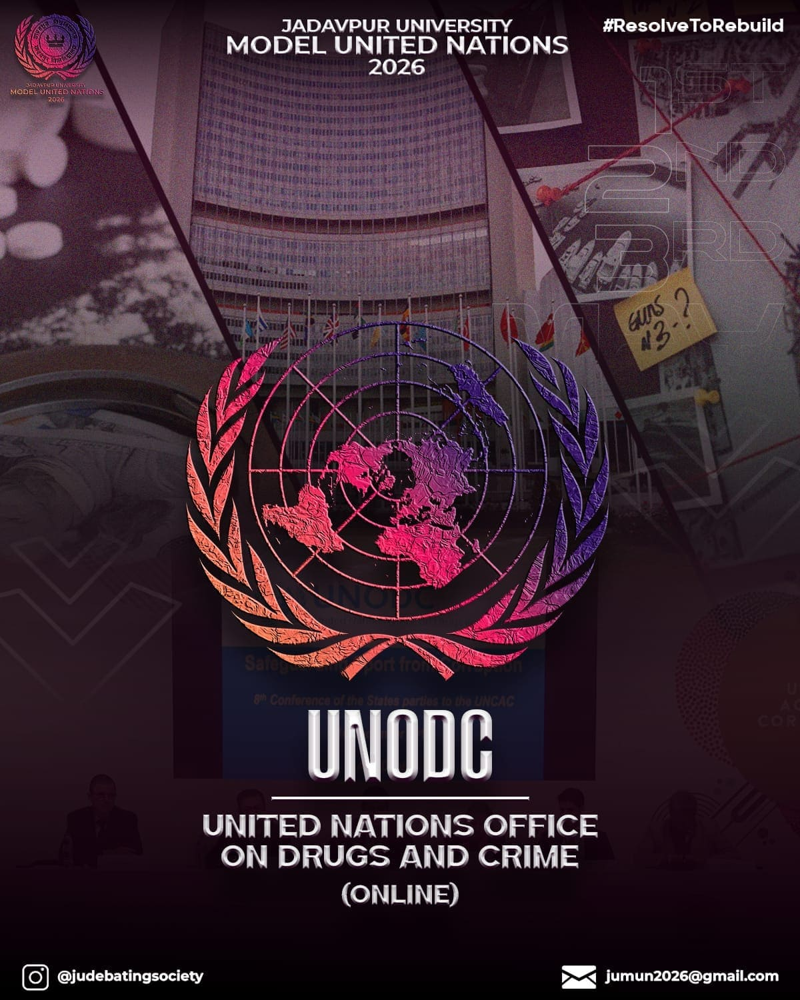
KNOW MORE ↗
Get all the essential information about participating in JUMUN 2026 as a delegate.
SEE BROCHURE ↗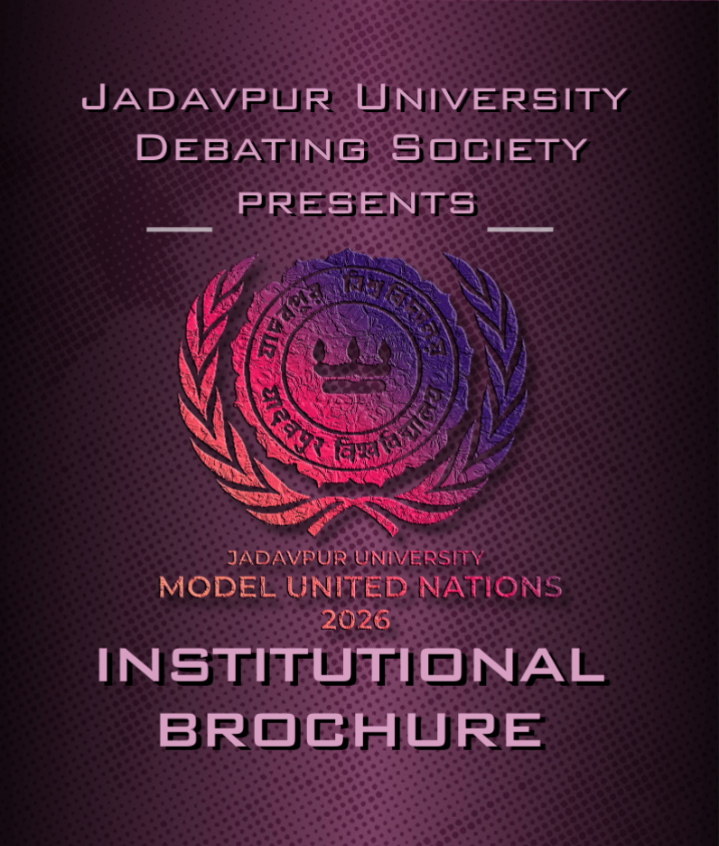
Get all the essential information about participating in JUMUN 2026 as an Institution.
SEE BROCHURE ↗If this brochure does not load on your device, please use "OPEN IN NEW TAB".
The Special Political and Decolonisation Committee is one of the six main committees of the United Nations General Assembly (UNGA) and is also known as the Fourth Committee. It is responsible for a broad range of issues, including decolonisation, international cooperation in the peaceful uses of outer space, the effects of atomic radiation, assistance to Palestinian refugees, questions relating to information, peacekeeping operations, and special political missions. Although its resolutions are recommendatory in nature, they form the basis for international consensus and future treaties. As an inclusive forum comprising all 193 UN Member States, the Committee ensures that every country’s voice is given a platform.
Here at the UNGA-SPECPOL in JUMUN 2026, we seek nuanced solutions to complex problems that maintain geopolitical objectives while remaining steadfast to the greater goal of bettering the world for all of humanity.
The Economic and Social Council is one of the 6 principal organs of the UN, which controls and coordinates the economic and social functions of the UN in achieving its developmental objectives, specifically through its specialised agencies. These developmental objectives include ensuring a higher standard of living, education, and healthcare, and fostering respect for and observance of human rights and fundamental freedoms, among others.
As social and economic indicators continue to show wide disparities in income, infrastructure, and quality of life, the ECOSOC in JUMUN 2026 seeks versatile, actionable solutions to the problems that plague the modern world, particularly the developing world.
The Commission on the Status of Women is the main global intergovernmental body exclusively dedicated to the promotion of gender equality, the rights, and the empowerment of women. It is a functional commission of the Economic and Social Council and is instrumental in promoting women’s and girls’ rights and documenting the reality of their lives while shaping global standards on gender equality. In addition to being historically underrepresented, undervalued, and discriminated against, women’s leadership and political engagement are frequently jeopardised on all levels, from local to intergovernmental, and this is exactly what CSW seeks to rectify.
Here at the CSW in JUMUN 2026, we seek discourse that truly engages with the deeply entrenched roots of systemic misogyny and acknowledges the full extent of patriarchal oppression, for it is only then that concrete steps in combating the same can be implemented.
The International Seabed Authority is an autonomous international organisation established under the 1982 United Nations Convention on the Law of the Sea. It is the organisation through which State parties to UNCLOS organise and control all mineral resources-related activities in the area for the benefit of humankind as a whole. ISA thus has the mandate to protect the marine environment from harmful effects that may arise from deep-seabed related activities. The ISA is founded on the principle that the international seabed and its mineral resources constitute the “common heritage of mankind,” so no state may claim sovereignty over them, and the benefits must be shared equitably among all.
At the ISA in JUMUN 2026, we seek delegates who preserve their portfolios' strategic goals but remain committed to actualising the ISA’s original objective of ensuring the greater good of all nations through the mineral-based and other resources of the seabed.
While opposing political factions exist within the Indian democracy, it is collaboration and coordination that must ever be prioritised for the benefit of the nation. The All India Political Parties Meet is a committee in JUMUN 2026 aimed precisely at achieving this objective. Representatives of political parties all over the country, whether national or regional, ruling or opposition, are given an equal voice in discussing legislation, public policy, and ensuring government accountability in a manner more flexible than the formal legislative bodies. This committee would be a test of how effectively delegates can engage with national issues constructively while also preserving their respective parties’ political and strategic interests.
At the AIPPM at JUMUN 2026, we seek delegates who balance astute political acumen with moral integrity towards serving the people, channelling a better version of their respective portfolios than their real-life counterparts.
Leading news organisations and media hubs are represented by the International Press. It meticulously examines the committee discussions and puts together the conference newsletter. Any Model United Nations should always include a segment on the international press (MUN). Participants in IP will act as journalists and photographers for various news organisations. Journalists will have the opportunity to participate in other committees as a third party to report on their development, effectiveness, debate flow, alliance-building, and other aspects. All of the conference's moments are documented by photographers. In addition to being stunning, photographs that tell a story demand that their subjects be positioned in a way that does so even in the absence of captions.
At the IP in JUMUN 2026, we seek journalists and photographers who don’t just report but lend a critical fly-on-the-wall perspective on the actors and processes that shape policy.
South-South cooperation (SSC) refers to the technical cooperation among developing countries in the Global South. It is a tool used by the states, international organisations, academics, civil society, and the private sector to collaborate and share knowledge, skills, and successful initiatives in specific areas such as agricultural development, human rights, urbanisation, health, climate change, etc. The High-Level Committee on South-South Cooperation is the main policymaking body on SSC. It is a subsidiary body of the UN General Assembly that was originally comprised of representatives of all countries participating in the United Nations Development Programme (UNDP). The Committee monitors the implementation of the Buenos Aires Plan of Action, ensures sustained efforts to strengthen Technical Cooperation among Developing Countries (TCDC), promotes new policies and innovative approaches, reviews the effective use of financial resources without affecting existing programmes, and ensures coordination of all promotional and operational TCDC activities across the United Nations development system.
The HLC - SSC in JUMUN 2026 seeks to exemplify and actualise collaborative progress among economically weaker nations so as to collectively insulate each other from their vulnerabilities and emerge more prosperous and developed as a whole.
Despite long efforts to suppress and combat the same, criminal activity at the regional as well as the national or international level, including but not limited to manufacture, traffic, and consumption of illicit drugs, continues to show a troubling persistence in several parts of the world. Moreover, these problems have historically had a troubling tendency to be attributed to simplistic factors and have been dealt with by similar brute-force tactics. The United Nations Office on Drugs and Crime was set up in 1997 to combat these issues.
The UNODC in JUMUN 2026 requires a nuanced understanding of the complex social, political, economic, and cultural realities that manifest in these problems and proposes solutions that account for their complex, layered root causes and afford protection for victims and at-risk individuals on all sides of the table.
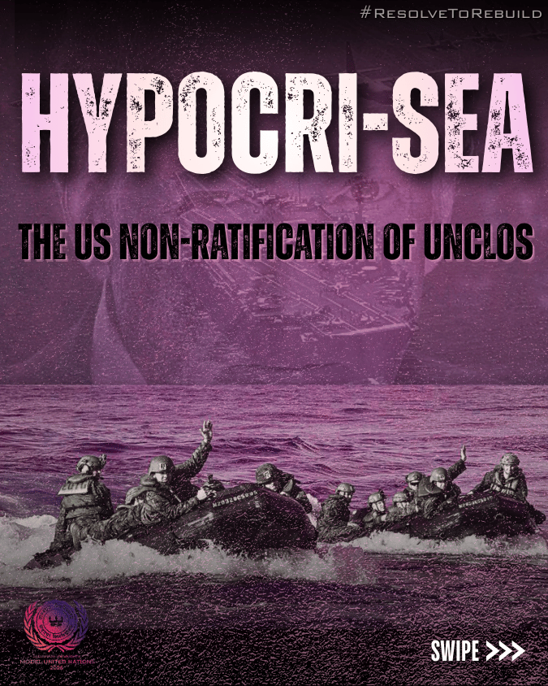
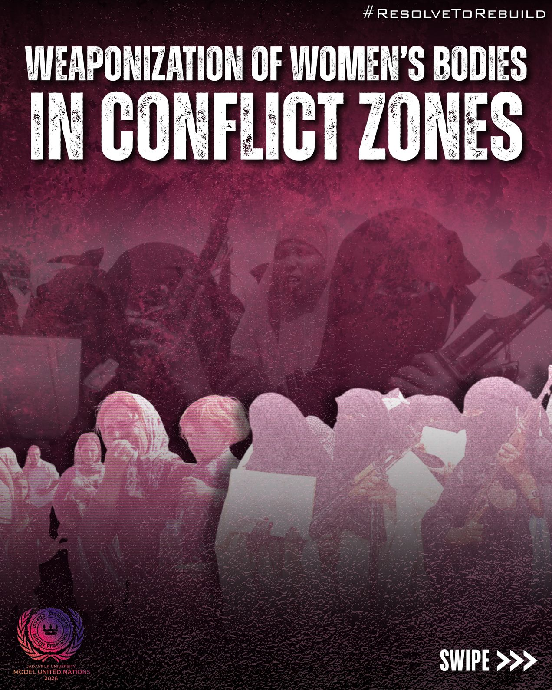
The use of Sexual Violence as a tool for War.
READ ENTIRE BLOG ↗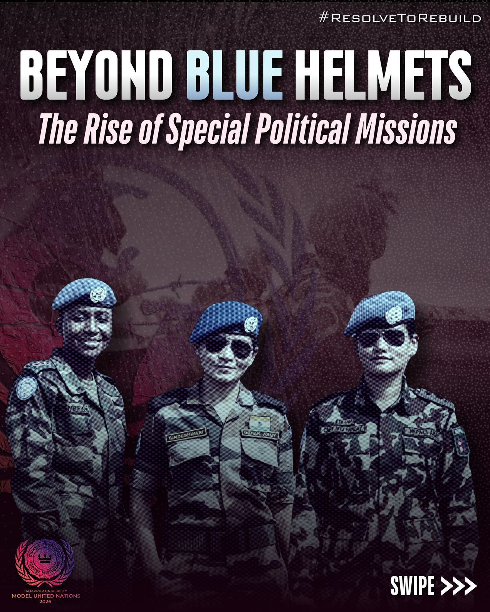
In modern warfare, the map of a conflict is often drawn not just across territories, but across the bodies of women and girls. Standing in 2026, the global community continues to grapple with a grim reality. Conflict-Related Sexual Violence (CRSV) is no longer viewed by experts as an accidental byproduct of chaos. Instead, it has evolved into a calculated, cost-effective military strategy designed to fracture the social fabric of "enemy" populations.
The use of sexual violence as a tool of war is a recurring historical pattern that transcends geography. From the 1994 Genocide against the Tutsi in Rwanda, where an estimated 250,000 to 500,000 women were raped, to contemporary crises, the objective remains the same: the total degradation of a community's identity.
By targeting women, armed groups strike at the heart of societal "honour" and domestic stability.This tactic achieves what traditional artillery cannot; it displaces populations through terror, alters ethnic compositions via forced pregnancy, and ensures long-term instability through intergenerational trauma and social marginalisation. It effectively turns personal bodies into symbolic territory, creating deep-seated psychological and physical trauma that persists long after the active fighting concludes.
The scale of this issue remains alarmingly high, though verified figures are widely considered to be the "tip of the iceberg" due to extreme underreporting caused by stigma, fear of retaliation, and the collapse of local justice systems.
The Democratic Republic of Congo (DRC), which is often cited as one of the most dangerous places to be a woman, reports have indicated that roughly 48 women are raped every hour in the country. In the eastern regions, sexual violence is frequently used by militias to exert control over mineral-rich territories.
In Sudan and South Sudan, UN reports have documented the systematic abduction of women and school-aged girls. In recent escalations, over 100 cases of sexual violence were verified in a single month in Darfur, though actual numbers are believed to be significantly higher due to underreporting.
In Gaza, UN investigations have highlighted allegations of public stripping and sexual assault during military operations. Similarly, in Ukraine, international monitors have documented hundreds of cases of sexual violence used as a method of psychological warfare against civilians.
The effectiveness of CRSV as a weapon relies heavily on the collapse of justice. When the perpetrators are the de facto authorities, as seen with the Taliban in Afghanistan or various paramilitary groups in the Global South, survivors are forced into a choice between life and dignity.
Furthermore, the World Health Organization (WHO) estimates that nearly one in three women worldwide has been subjected to physical or sexual violence. In conflict zones, this ratio spikes, yet the "shame" often associated with these crimes leads to a culture of internal silence, shielding the aggressors from international accountability.
Despite international frameworks intended to categorize CRSV as war crimes, crimes against humanity, and acts of genocide, the financial and political commitment to preventing these acts remains inadequate. Reports indicate that while global military expenditure reached record highs, surpassing $2.7 trillion in 2024, the funding directed toward women-led organizations and frontline support groups in conflict zones remains a fraction of the necessary aid, often dropping below 0.5% of total humanitarian assistance.
The current global approach, which often treats CRSV as an "unfortunate" side effect of war, is increasingly viewed as a failure. For security to be genuine, it must move beyond traditional military definitions and prioritize the safety of women. As the United Nations Commission on the Status of Women (CSW) and other international bodies convene, there is a growing push to move beyond "protection rhetoric." Experts argue that as long as women’s bodies are treated as symbolic territory to be conquered, they will remain primary targets.
True peace requires a shift in how the global order conceptualizes security. It is no longer enough to track the movement of tanks and missiles; the international community must account for the politics of body and control. Until CRSV is treated with the same gravity as chemical warfare or territorial annexation, the narratives of global progress will remain incomplete for those living on the silent frontlines.
Ending with a question, "If a single chemical weapon attack triggers immediate global outrage and international intervention, why does the systematic, strategic weaponization of thousands of women’s bodies, a tactic that destroys generations more effectively than any nerve agent remain treated by the global security order as an 'unfortunate' side effect of war rather than a red line for humanity?"
Peacekeeping has long served as a key mechanism used by the UN to maintain or restore peace in conflict-affected areas, often through the deployment of international forces. However, while peacekeeping has been more effective than unilateral military actions when it comes to stopping conflict, reducing violence, rebuilding state institutions, and protecting civilian lives, its ability to adapt to the changes in the contemporary global landscape is in question. Political institution, inadequate resources, gaps in mandate, perpetuation of violence by peacekeepers, improper transition planning, lack of coordination with regional organisations, among other things, as seen in the case of failures in missions like those seen in Mali (MINUSMA), Democratic Republic of Congo (MONUSCO), Darfur (UNAMID), Haiti (MINUSTAH), highlight the key issues that have paralysed the effectiveness of peacekeeping missions.
The key need as of now is the need to link protection mandates to political solutions in a much more explicit manner. The goal is to develop the political and governmental institutions of a state to set up the conditions required for long term peace, which in turn allows for the adoption of better exit strategies. Often, an extremely strong focus on the protection of civilians sets up missions to be long and never-ending. As seen in the case of MONUSCO in the Democratic Republic of Congo, missions that have protracted presences without clear, achievable objectives often suffer from mission fatigue, public disillusionment and a perception of ineffectiveness despite ongoing conflict. Long-term deployments, when not backed up by clear political pathways amidst complex, unresolved conflicts, often struggle to fulfill their mandate effectively or transition out gracefully. This highlights the need for more targeted modular approaches.
In light of this, we must examine the need for better utilisation of Special Political Missions, which can operate alongside or follow peacekeeping operations - functioning largely as political instruments. Special Political missions are much more likely to respect the autonomy and sovereignty of involved parties as they depend on cooperation and participation of the involved parties in the peace process, while peacekeeping operations face challenges withregards to obtaining the consent of the involved parties in the conflict.
Here, we also must look at the problem related to inadequate funding and resource mismatch, wherein recent budget cuts have left missions like UNAMID stretched thin and unable to perform their duties effectively. Mandates simply do not have the resources necessary to fulfill them, as there is a direct link between underfunding and operational ineffectiveness. Special Political missions do not deploy combat troops and do not utilise weaponry or heavy equipment, and usually require fewer personnel compared to peacekeeping missions, and are therefore a much more viable option as the high operational cost is eliminated.
Special Political Missions also seek to fulfill their mandate within a shorter period compared to peacekeeping operations and seek to develop political and governance capacities of a state, which allows for more concise planning for transitioning out of the conflict areas and sets up the conditions necessary for long-term peace.
The SPECPOL remains the primary body where these changes and updates can be reviewed and evaluated, influencing the direction adopted by the UN, which will then determine how the role of SPMs can be strengthened without importing hollow protection mandates to allow the UN to seek a sustainable political resolution that is more effective.
For more than four decades, the legal architecture of global ocean governance has rested upon the United Nations Convention on the Law of the Sea. The convention regulates maritime zones, navigational freedoms, seabed resources, and environmental obligations across most of the world’s oceans. Paradoxically, the United States, a state that played a decisive role in shaping many of the convention’s core provisions, remains outside the treaty regime. This refusal has generated a persistent structural paradox within contemporary maritime governance, as a state derives substantial strategic and legal advantage from a normative regime while deliberately remaining outside its formal treaty framework.
Washington frequently invokes UNCLOS principles to defend freedom of navigation and contest excessive maritime claims. American naval operations routinely rely on its codification of transit passage and high seas freedoms when challenging restrictions in contested maritime regions such as the South China Sea. These arguments are often presented alongside criticisms of maritime practices undertaken by states such as China. Yet the credibility of such critiques is complicated by the fact that the United States itself has declined to ratify the very treaty it invokes as the foundation of the rules-based maritime order.
This contradiction has deepened with the emergence of new governance regimes built upon the UNCLOS framework. The Agreement on Biodiversity Beyond National Jurisdiction represents the most significant attempt in decades to regulate environmental protection in areas beyond national jurisdiction. The United States participated actively during negotiations and successfully shaped provisions on marine genetic resources and scientific research. However, Washington has again hesitated to ratify the final agreement.
The pattern reflects a broader characteristic of American ocean policy, in which influence is pursued without equivalent institutional participation. Within seabed governance under the International Seabed Authority, American representatives engage in negotiations and seek to shape regulatory outcomes despite remaining outside the treaty system that provides formal decision-making authority.
This selective engagement with ocean governance is not simply a technical legal issue but a reflection of deeper tensions within American foreign policy. For decades, successive administrations have promoted the idea of a rules-based international order, particularly in domains such as maritime security and global trade. Yet the refusal to ratify UNCLOS, and now the hesitation surrounding BBNJ, reveals a persistent reluctance within segments of the American political system to accept binding multilateral constraints, even when those constraints were originally designed with significant U.S. influence.
The consequences extend beyond questions of diplomatic credibility. By remaining outside UNCLOS, the United States forfeits formal participation in several institutional mechanisms that shape contemporary maritime governance. These include the ability to nominate judges to key adjudicatory bodies, influence institutional decision-making processes, and participate fully in regulatory frameworks governing seabed resources and environmental protection. In effect, the most powerful maritime state in the world continues to operate adjacent to the principal legal regime governing the oceans rather than within it.
This position also produces a curious asymmetry in global diplomacy. States that are parties to UNCLOS accept obligations related to dispute settlement, environmental standards, and cooperative resource management. The United States, however, invokes the stability created by these rules while avoiding the institutional commitments that sustain them. Critics argue that this dynamic reinforces perceptions of exceptionalism within international law, where powerful states expect compliance from others without demonstrating equivalent willingness to accept legal constraint themselves.
The situation becomes even more consequential as ocean governance evolves in response to emerging challenges. Issues such as deep-sea mining, marine biodiversity loss, and climate-related ocean changes increasingly require coordinated international regulation. Treaties like BBNJ attempt to fill regulatory gaps by establishing mechanisms for marine protected areas, environmental impact assessments, and equitable sharing of scientific knowledge. If the United States remains outside these frameworks, its capacity to shape future ocean governance may gradually erode despite its significant scientific and strategic capabilities.
In an era when the United States portrays itself as a principal guardian of the rules-based international order, the contradiction becomes increasingly difficult to ignore. If global leadership requires accepting the authority of the rules one promotes, can a state demand adherence to those rules while continuing to stand outside the very treaties that constitute them?
The received wisdom of Indian political commentary sorts parties into a familiar binary, with the BJP as the Hindu-nationalist right, and the Congress as the secular, socialist left. Global media also reproduces this map faithfully. However, if one rises above this surface level classification, they would be forced to rethink the existence of such a classification in the first place.
If we just consider the spatial anomaly that the map cannot explain. Bengaluru, India's technology capital, perhaps its most globally integrated city, has returned the BJP's candidate from Bengaluru South continuously since 1989. Kerala's capital, Thiruvananthapuram, elected its first BJP mayor in 2020 despite the state's reputation as a Left fortress.
Nationwide surveys consistently show the BJP's support rising with education levels and urban residence. This totally reverses the conservative-rural correlation that defines right-wing politics in the United States or Western Europe. If the BJP is the party of tradition and hierarchy, why do India's most modern citizens vote for it at disproportionate rates? The conventional ideology map does not answer this. The quest for an answer begins by abandoning the map.
On closer inspection, the ideological distance between India's two largest parties on economic policy is, in practice, negligible. The PM's populist policies have been largely socialist, having provided 30 lakh crores of benefits for the poor and backward communities without the tag of a socialist. The liberalisation of 1991 was a Congress project; the BJP sustained and deepened it across successive terms.
The Mahatma Gandhi National Rural Employment Guarantee Act, the most definitive welfare programme of the UPA era, was sustained only by the NDA. In fact, its most noticeable change was rebranding, reminding us that policy in India often outlives the ideology that claims it. Therefore, both parties have operated within the same framework: fiscal consolidation, infrastructure-led growth, export promotion, and targeted cash transfers replacing in kind subsidies.
The dichotomy, where it exists at all, is social rather than economic. The difference lies in political vocabulary and in which communities are mobilised, not over competing visions of the political economy.
Daniel Bell's 1960 thesis, ‘The End of Ideology’, argues that the post-war Western consensus on the welfare state, mixed economy, and political pluralism had dissolved the conditions under which grand ideological combat was possible. The same logic applies to post-liberalisation India with particular force.
What fills the vacuum? Identity, caste, religion, language, region and of course the personality of leadership. The Congress Party is the most transparent illustration. At various points in its history, it has been a vehicle for Gandhian trusteeship economics, Nehruvian democratic socialism, Indira Gandhi's populist statism, and Manmohan Singh's technocratic liberalism. These are not just refinements but, at times, contradictions. The party's coherence has never derived from doctrine, which is both its strength and its weakness.
The lack of ideology in the Congress is also why the INDIA bloc is together, despite so many obvious contradictions. A caste based formation in the Hindi heartland demanding a special state package, a Dravidian party that argues against the southern tax revenues being siphoned to the North, a Hindutva group from Maharashtra, a communist party that directly challenges Hindu nationalism, all share an alliance with the Congress. The only point of genuine agreement is the recognition of the Nehru-Gandhi family as the coalition's central unifying authority.The most unambiguous empirical evidence for ideology's irrelevance is the behaviour of elected representatives themselves.
The Association for Democratic Reforms reports that 443 MLAs and MPs switched parties and recontested polls between 2016 and 2020. In fact, the ruling party's machinery is often dubbed a "washing machine".
A legislator who crosses the partisan aisle in India does so primarily to stay in proximity to power, the resources power controls, or sometimes even to get rid of the Enforcement Directorate’s investigation. The ideological label on the door of the new party is a secondary consideration and often entirely irrelevant.Indian democracy is, by conventional metrics, a success: regular elections, peaceful transfers of power, expanding franchise. What it has not produced is a party system organised around competing visions of the good society.
The electorate is offered, in each cycle, a choice between management styles, identity coalitions, and the personality of leadership.
The communists, the CPI(M) in particular, remain the only formation with a formally defined and consistently articulated ideological programme. It is telling that they are also in the most acute long-term decline, returning just 8 seats in the 2024 Lok Sabha, the lowest combined tally of the left since independence.
India wrote a socialist commitment into its Constitution in 1976. It now runs elections in which no major national party advocates socialism as a governing doctrine, yet nearly all promise some version of welfare populism. What remains is an ideological vacuum in which the language of doctrine has quietly receded from public life. In its place has emerged something more durable and perhaps more honest: a continuous negotiation of power between communities, mediated by parties who have learned that ideology is an unnecessary complication in that negotiation.
Ultimately, the "Left vs. Right" binary in India serves more as a convenient shorthand for international observers than as a functional blueprint for domestic governance. What we witness today is the "post-ideological" state, a system where the machinery of welfare and the mechanics of the market have merged into a singular, pragmatic consensus. In this landscape, the ballot box doesn't represent a clash of civilizations or a choice between capitalism and socialism; it represents a high-stakes auction of identity and a performance review of leadership.
As the grand doctrines of the 20th century fade into the background, Indian politics has stripped itself down to its most fundamental parts: power, patronage, and personality. While the flags change colour and the slogans are rebranded, the underlying pursuit of the "Welfare State" remains the only constant. We have moved from a battle of "isms" to a battle of delivery systems, where the "washing machine" of political defection proves that, for the representative, the party label is merely a seasonal garment.
This brings us to a daunting realization about the future of the world's largest democracy:
"If our political parties have abandoned distinct ideological visions in favour of a homogenized, populist management style, are we actually choosing a direction for our nation's future, or are we simply picking which 'brand' of leadership gets to oversee an inevitable, pre determined status quo?"
Have something you want to tell us?
Email us your query at jumun2026@gmail.com and we will get back to you as soon as we can!